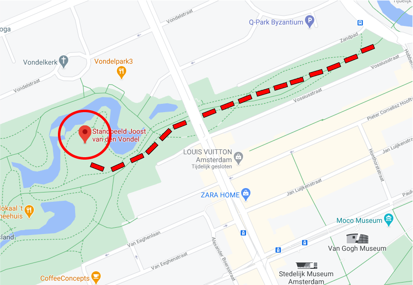

Move to the next location!
Here you are at the vondelmonument. The man you see is Joost van den Vondel, the park is named after him. He was an important man during the 1800s.


Here you are at the vondelmonument. The man you see is Joost van den Vondel, the park is named after him. He was an important man during the 1800s.